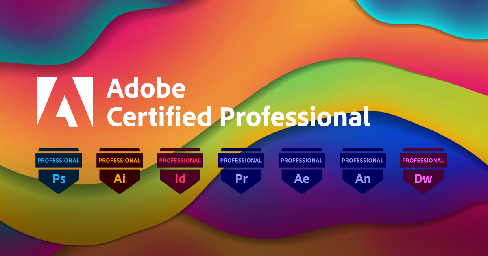

<title>Resume</title>
 <link rel="icon" href="img/favicon.PNG">
 <link href="https://cdn.jsdelivr.net/npm/bootstrap@5.3.0-alpha3/dist/css/bootstrap.min.css" rel="stylesheet" integrity="sha384-KK94CHFLLe+nY2dmCWGMq91rCGa5gtU4mk92HdvYe+M/SXH301p5ILy+dN9+nJOZ" crossorigin="anonymous">
 <link rel="stylesheet" href="https://cdn.jsdelivr.net/npm/bootstrap-icons@1.11.3/font/bootstrap-icons.min.css">
 <link rel="stylesheet" href="css/style.css">
 <link rel="stylesheet" href="css/resume.css">


<main>
  <div class="nav_aboutme">

    <header id="header" class="header bg-dark d-flex flex-column">

        <div class="profile-img">
            
        </div>
        <a href="" class="logo d-flex align-items-center justify-content-center">
          <h1 class="name text-center">Gemie Lorena</h1>
        </a>

        <!-- social icons -->
         <div class="social-links">
          <a href="#" class="facebook"><i class="bi bi-facebook"></i></a>
          <a href="#" class="twitter"><i class="bi bi-twitter"></i></a>
          <a href="#" class="youtube"><i class="bi bi-youtube"></i></a>
          <a href="#" class="linkedin"><i class="bi bi-linkedin"></i></a>
          <a href="#" class="instagram"><i class="bi bi-instagram"></i></a>
         </div>
   

         <nav id="navmenu" class="navmenu vh-100">
          <ul class="nav flex-column">
            <li class="nav-item">
              <a class="nav-link active" aria-current="page" href="index.html"><i class="bi bi-house"></i> Home</a>
            </li>
            <li class="nav-item">
              <a class="nav-link"href="aboutme.html"><i class="bi bi-file-earmark-person"></i> About</a>
            </li>
            <li class="nav-item">
              <a class="nav-link"href="resume.html"><i class="bi bi-file-person"></i> Resume</a>
            </li>
            <li class="nav-item">
              <a class="nav-link"href="portfolio.html"><i class="bi bi-file-earmark-person-fill"></i> Portfolio</a>
            </li>
            <li class="nav-item">
              <a class="nav-link"href="services.html  "><i class="bi bi-person"></i> Services</a>
            </li>
            <li class="nav-item">
              <a class="nav-link"href="contact.html  "><i class="bi bi-person"></i> Contact</a>
            </li>
            <li class="nav-item dropdown">
              <a class="nav-link dropdwon-toggle"href="#" role="button" data-bs-toggle="dropdown" aria-expanded="false"><i class="bi bi-arrow-down-circle-fill"></i> Dropdown Link</a>
              <ul class="dropdown-menu">
                <li><a class="dropdown-item"href="#">Action</a></li>
                <li><a class="dropdown-item"href="#">Another action</a></li>
                <li><a class="dropdown-item"href="#">Something else</a></li>
              </ul>
            </li>
          </ul>
       </nav>
</header>
</div>

<body>
  <div class="resume-container">
    <section class="resume">
      <h1><strong>RESUME</strong></h1>

      <section class="timeline">
      <h2 style="text-align: center; margin-top: 20px; font-size: 40px;" >EDUCATIONAL BACKGROUND</h2>
      <ul style="text-align: center; margin-top: 20px;">
        <li>
          <div class="timeline-item">
            <h3>TASICA Elementary School</h3>
            <p class="details">Taligan, Gattaran, Cagayan <br>
            2009-2015</p>
          </div>
        </li>
        <li>
          <div class="timeline-item">
            <h3>Gattaran National Trade School</h3>
            <p class="details">Junior High School <br>
            Palagao Sur, Gattran, Cagayan <br>
            2015-2019</p>
          </div>
        </li>
        <li>
          <div class="timeline-item">
            <h3>Mountain Province General Comprehensive High School</h3>
            <p class="details">Senior High School <br>
            STRAND: Science, Technology, Engineering, and Mathematics <br>
            Eyeb, Bontoc, Mountain Province <br>
            2020-2022</p>
          </div>
        </li>
        <li>
          <div class="timeline-item">
            <h3>Mountain Province State University</h3>
            <p class="details">Poblacion, Bontoc, Mountain Province <br>
              Bachelor of Science in Information Technology <br>
            2022-2026</p>
          </div>
        </li>
      </ul>
      
    </section>

    <section class="certifications">
      <h2 style="text-align: center;">Certifications and Awards</h2>
      <p class="text-center">Showcasing certifications and awards! Enjoy browsing!</p>

      <div class="text-center mb-4">
        <button class="btn btn-primary filter-btn" data-category="all">All</button>
        <button class="btn btn-secondary filter-btn" data-category="dept">Department</button>
        <button class="btn btn-success filter-btn" data-category="extra">Extra Curicullars</button>
      </div>


<!-- PROJECTS -->
<div class="card-container row g-4">
  <div class="card-dept" data-category="dept">
    
    <div class="card-body">
      <h1 class="card-text" style="font-size: 15px; letter-spacing: 0px;"> AWS Certified Cloud Practitioner </h1>
      <p>A foundational certification validating knowledge of cloud concepts, AWS services, and architecture.</p>
      <button class="btn btn-primary" data-bs-toggle="modal" data-bs-target="#modal-aws">View Details</button>
    </div>
  </div>

  <div class="card-dept" data-category="dept">
    
    <div class="card-body">
      <h1 class="card-text" style="font-size: 15px; letter-spacing: 0px;"> Dean's Lister/President’s Lister </h1>
      <p>Awarded for consistently high academic performance.</p>
      <button class="btn btn-primary" data-bs-toggle="modal" data-bs-target="#modal-dean">View Details</button>
    </div>
  </div>

  <div class="card-dept" data-category="extra">
    
    <div class="card-body">
      <h1 class="card-text" style="font-size: 15px; letter-spacing: 0px;"> Outstanding Club Officer      </h1>
      <p>Given to exemplary student leaders for their organizational contributions.</p>
      <button class="btn btn-primary" data-bs-toggle="modal" data-bs-target="#modal-club">View Details</button>
    </div>
  </div>

  <div class="card-dept" data-category="dept">
    
    <div class="card-body">
      <h1 class="card-text" style="font-size: 15px; letter-spacing: 0px;"> Adobe Certified Professional      </h1>
      <p>Validates skills in Adobe tools like Photoshop or Illustrator for creative design.      </p>
      <button class="btn btn-primary" data-bs-toggle="modal" data-bs-target="#modal-adobe">View Details</button>
    </div>
  </div>


<!-- MODAL -->
<div class="modal fade" id="modal-aws" tabindex="-1">
  <div class="modal-dialog modal-dialog-centered modal-dialog-scrollable modal-lg"> 
    <div class="modal-content">
      <div class="modal-header">
        <h5 class="modal-title">AWS Certified Cloud Practitioner</h5>
        <button type="button" class="btn-close" data-bs-dismiss="modal" aria-label="Close"></button>
      </div>
      <div class="modal-body">
        
      <h1 style="letter-spacing: 1px;">AWS Certified Cloud Practitioner</h1>    
      <p>This entry-level certification demonstrates your understanding of fundamental cloud computing concepts and how AWS services enable cloud solutions. It covers key topics such as AWS architecture, billing, pricing models, and basic security practices. Ideal for students or professionals starting their journey in cloud technology, it requires no prior technical experience and provides a strong foundation for more advanced AWS certifications. Benefits: Recognized globally, it opens doors to cloud-related internships and jobs.</p>
      </div>
      <div class="modal-footer">
        <button type="button" class="btn btn-secondary" data-bs-dismiss="modal">Close</button>
      </div>
    </div>
  </div>
</div>

<div class="modal fade" id="modal-dean" tabindex="-1">
  <div class="modal-dialog modal-dialog-centered modal-dialog-scrollable modal-lg"> 
    <div class="modal-content">
      <div class="modal-header">
        <h5 class="modal-title">Dean's Lister/President’s Lister</h5>
        <button type="button" class="btn-close" data-bs-dismiss="modal" aria-label="Close"></button>
      </div>
      <div class="modal-body">
        
      <h1 style="letter-spacing: 1px;">Dean's Lister/President’s Lister</h1>    
    <p>This academic recognition is awarded to students who achieve exemplary grades within a specific term or academic year. Requirements often include maintaining a high GPA (e.g., 3.5 or above on a 4.0 scale) and being in good standing with the institution. Being a consistent Dean’s or President’s Lister not only reflects dedication and hard work but also distinguishes you as an achiever among your peers. Benefits: It strengthens your resume and portfolio, especially for competitive opportunities like internships and scholarships.</p> 
    </div>
      <div class="modal-footer">
        <button type="button" class="btn btn-secondary" data-bs-dismiss="modal">Close</button>
      </div>
    </div>
  </div>
</div>

<div class="modal fade" id="modal-club" tabindex="-1">
  <div class="modal-dialog modal-dialog-centered modal-dialog-scrollable modal-lg"> 
    <div class="modal-content">
      <div class="modal-header">
        <h5 class="modal-title">Outstanding Club Officer</h5>
        <button type="button" class="btn-close" data-bs-dismiss="modal" aria-label="Close"></button>
      </div>
      <div class="modal-body">
        
      <h1 style="letter-spacing: 1px;">Outstanding Club Officer</h1>    
        <p>This award is presented to student leaders who excel in managing and contributing to their organizations. Criteria include effective leadership, organizational impact, teamwork, and innovative contributions to club activities. For example, as Vice President of an AWS Club, you might earn this award by organizing impactful events, fostering member engagement, or collaborating with external partners. Benefits: Highlights your leadership, communication, and project management skills, making it an excellent addition to your portfolio.</p>
    </div>
      <div class="modal-footer">
        <button type="button" class="btn btn-secondary" data-bs-dismiss="modal">Close</button>
      </div>
    </div>
  </div>
</div>

<div class="modal fade" id="modal-adobe" tabindex="-1">
  <div class="modal-dialog modal-dialog-centered modal-dialog-scrollable modal-lg"> 
    <div class="modal-content">
      <div class="modal-header">
        <h5 class="modal-title">Adobe Certified Professional</h5>
        <button type="button" class="btn-close" data-bs-dismiss="modal" aria-label="Close"></button>
      </div>
      <div class="modal-body">
        
      <h1 style="letter-spacing: 1px;">Adobe Certified Professional</h1>    
        <p>This certification validates your expertise in Adobe software such as Photoshop, Illustrator, or Premiere Pro, showcasing your ability to create professional-quality designs, videos, or digital assets. The certification process typically involves completing a project-based exam that tests your ability to use specific tools, features, and workflows. Benefits: It is a sought-after credential in creative industries, enhancing your credibility as a graphic designer or content creator. It can also lead to freelance or full-time opportunities in digital design.</p>
    </div>
      <div class="modal-footer">
        <button type="button" class="btn btn-secondary" data-bs-dismiss="modal">Close</button>
      </div>
    </div>
  </div>
</div>


    </section>
  </div>

<script src="https://cdn.jsdelivr.net/npm/bootstrap@5.3.0-alpha3/dist/js/bootstrap.bundle.min.js" integrity="sha384-ENjdO4Dr2bkBIFxQpeoTz1HIcje39Wm4jDKdf19U8gI4ddQ3GYNS7NTKfAdVQSZe" crossorigin="anonymous"></script>
<script src="js/typed.js/resume.js"></script>
</body>